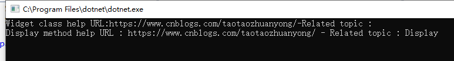

C# 程序中的类型、成员和其他实体支持使用修饰符来控制其行为的某些方面。 例如，方法的可访问性是由 public、protected、internal 和 private 修饰符控制。 C# 整合了这种能力，以便可以将用户定义类型的声明性信息附加到程序实体，并在运行时检索此类信息。 程序通过定义和使用特性来指定此类额外的声明性信息。
以下示例声明了 HelpAttribute 特性，可将其附加到程序实体，以提供指向关联文档的链接。
public class HelpAttribute : Attribute
{
string url;
string topic;
public HelpAttribute(string url)
{
this.url = url;
}
public string Url => url;
public string Topic
{
get { return topic; }
set { topic = value; }
}
}所有特性类都派生自标准库提供的 Attribute 基类。 特性的应用方式为，在相关声明前的方括号内指定特性的名称以及任意自变量。 如果特性的名称以 Attribute 结尾，那么可以在引用特性时省略这部分名称。 例如，可按如下方法使用 HelpAttribute。
[Help("https://www.cnblogs.com/taotaozhuanyong/")]
public class Widget
{
[Help("https://www.cnblogs.com/taotaozhuanyong/", Topic = "Display")]
public void Display(string text)
{
}
}此示例将 HelpAttribute 附加到 Widget 类。 还向此类中的 Display 方法附加了另一个 HelpAttribute。 特性类的公共构造函数控制了将特性附加到程序实体时必须提供的信息。 可以通过引用特性类的公共读写属性（如上面示例对 Topic 属性的引用），提供其他信息。
可以在运行时使用反射来读取和操纵特性定义的元数据。 如果使用这种方法请求获取特定特性，便会调用特性类的构造函数（在程序源中提供信息），并返回生成的特性实例。 如果是通过属性提供其他信息，那么在特性实例返回前，这些属性会设置为给定值。
下面的代码示例展示了如何获取与 Widget 类及其 Display 方法相关联的 HelpAttribute 实例。
Type widgetType = typeof(Widget);
//获取为小部件类型定义的每个helpattribute。
var widgetClassAttributes = widgetType.GetCustomAttributes(typeof(HelpAttribute), false);
if (widgetClassAttributes.Length > 0)
{
var attr = (HelpAttribute)widgetClassAttributes[0];
Console.WriteLine($"Widget class help URL:{attr.Url}-Related topic :{attr.Topic}");
}
MethodInfo displayMethod = widgetType.GetMethod(nameof(Widget.Display));
//获取为widget.display方法定义的每个helpattribute。
var displayMethodAttributes = displayMethod.GetCustomAttributes(typeof(HelpAttribute), false);
if (displayMethodAttributes.Length > 0)
{
var attr = (HelpAttribute)displayMethodAttributes[0];
Console.WriteLine($"Display method help URL : {attr.Url} - Related topic : {attr.Topic}");
}
Console.ReadLine();运行结果如下：
